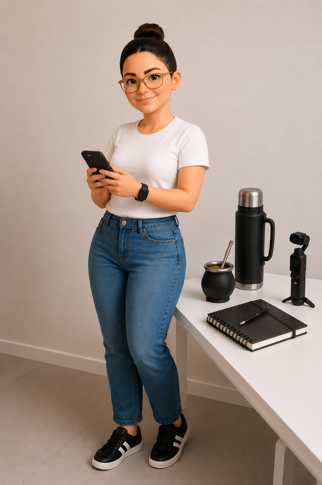
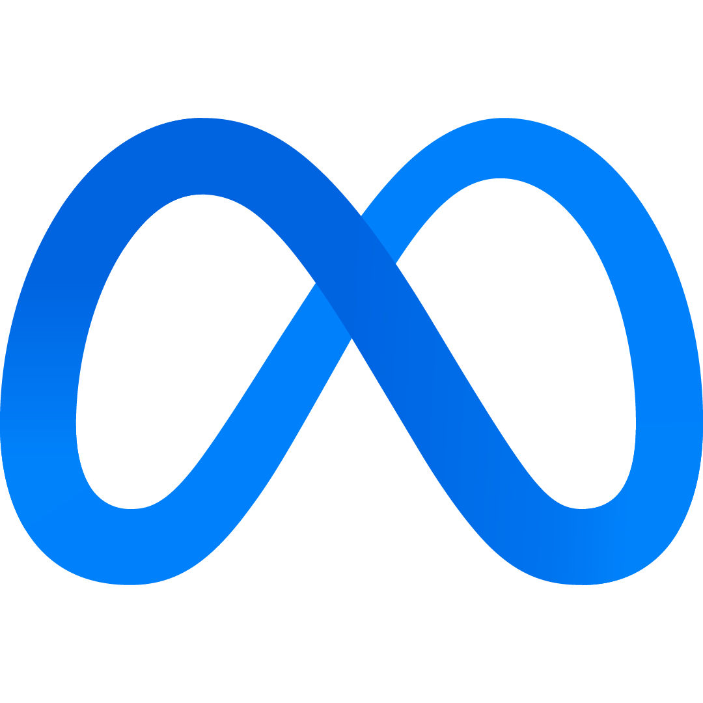
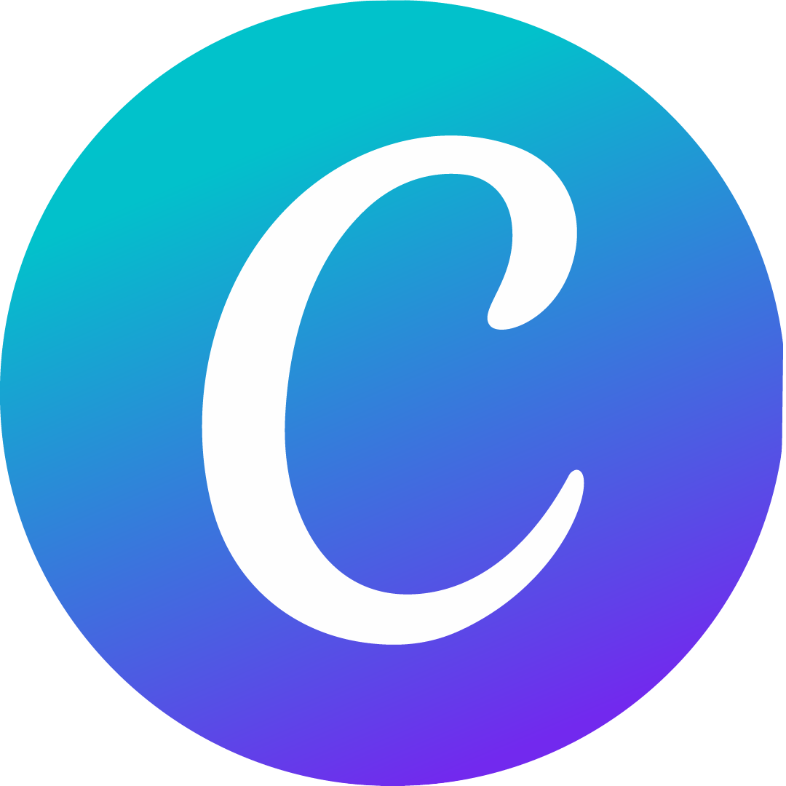
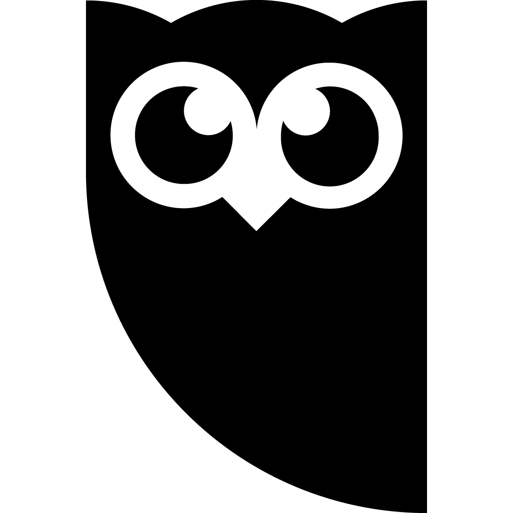
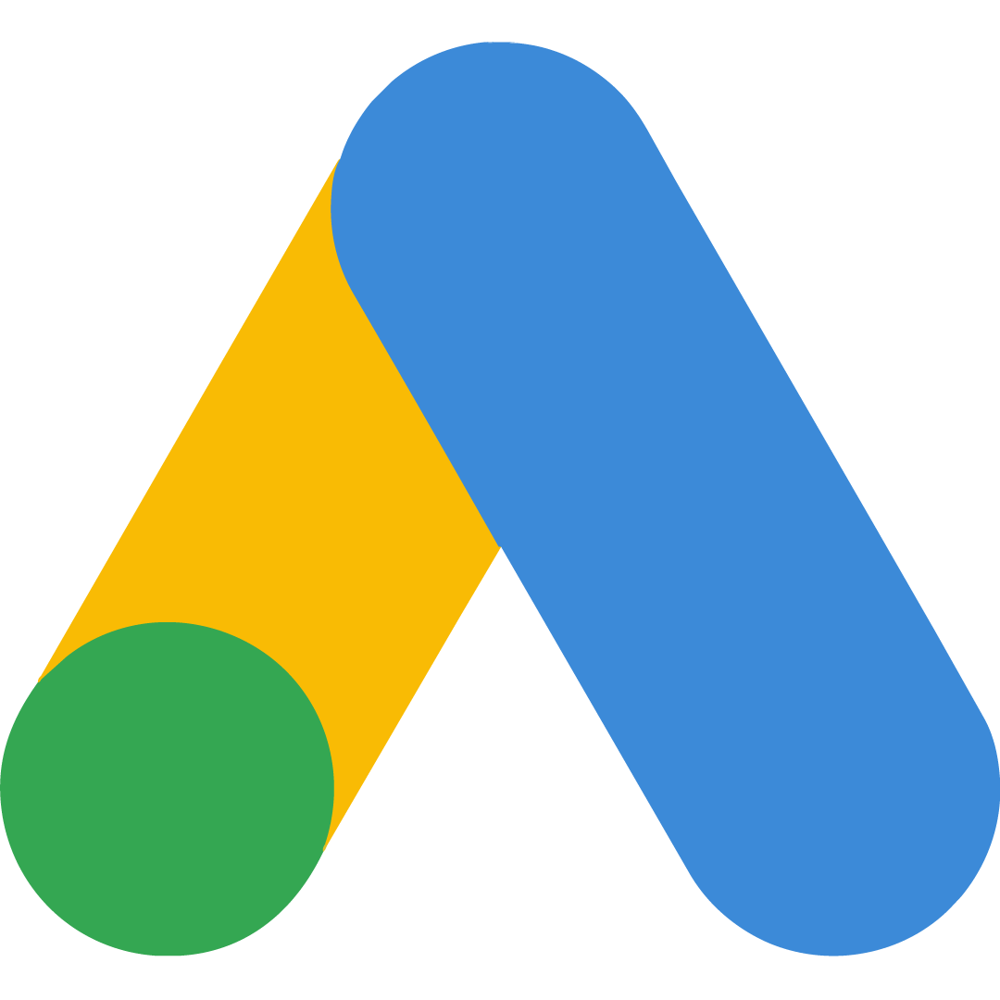
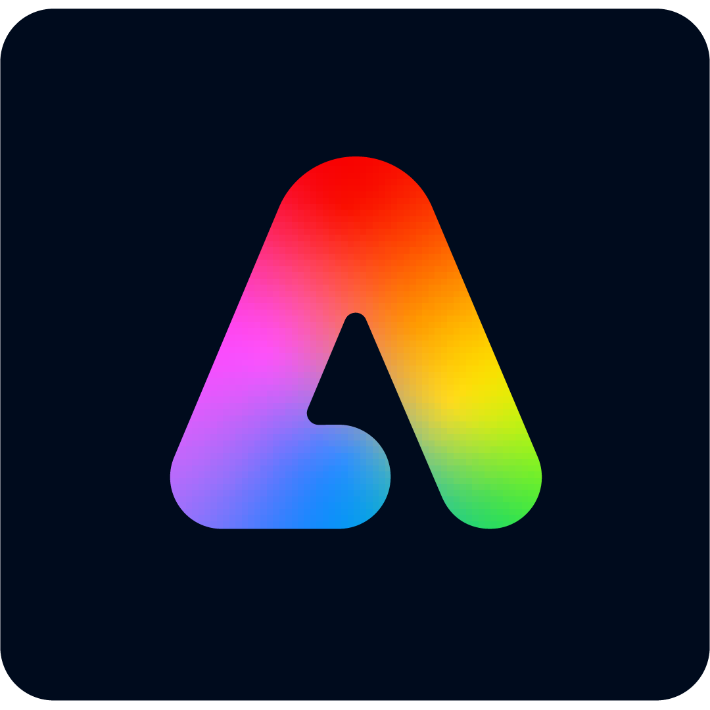
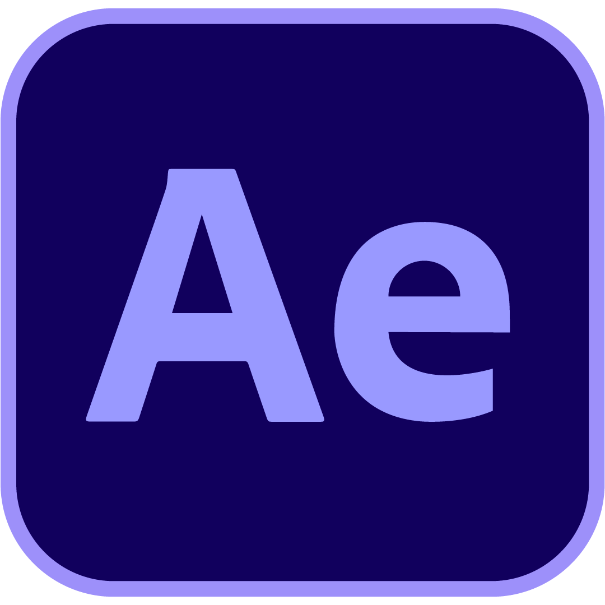

Communis
Comunicación estratégica · en solitario
Gestioné en solitario la comunicación de 2 proyectos para la consultora Communis, con foco en LinkedIn y comunicación institucional.
Ver proyecto →// Portfolio CM — Jujuy, Argentina
Trabajo con medios e instituciones para convertir ideas en contenidos que funcionen en redes. Gestiono comunidades, planifico y publico contenido, analizo resultados y también me meto de lleno en la parte creativa. Instagram, Facebook, LinkedIn y YouTube son parte del día a día, pero siempre con una pregunta detrás: ¿cómo hacemos que esto funcione mejor?

01 — qué hago
Gestiono cuentas de Instagram y Facebook de principio a fin: planificación, publicación, interacción y seguimiento de la comunidad.
Pienso y desarrollo contenidos para redes, desde la planificación editorial y el copywriting hasta la comunicación institucional y LinkedIn.
Trabajo con pauta digital y analítica para entender qué funciona, medir resultados y tomar mejores decisiones sobre el contenido.

Meta Business Suite
Canva
Hootsuite
Google Ads
Adobe Express
After Effects02 — cuentas gestionadas
Comunicación estratégica · en solitario
Gestioné en solitario la comunicación de 2 proyectos para la consultora Communis, con foco en LinkedIn y comunicación institucional.
Ver proyecto →Gestión de comunidad
Manejo de Instagram y Facebook del canal: contenido institucional, coberturas y piezas de temporada.
Ver proyecto →Gestión de comunidad · todas las cuentas
Gestión de Instagram, Facebook y YouTube de todo el grupo de medios (Canal 7, AM 630, FM Trópico, Somos Jujuy), incluyendo la analítica del canal de YouTube.
Ver proyecto →Gestión de comunidad
Identidad y contenido para las redes de un medio de periodismo ambiental: Instagram y Facebook.
Ver proyecto →Calendario de contenido
Plan de marketing digital y calendario de contenidos para un emprendimiento gastronómico, gestionado en Meta.
Ver proyecto →03 — quién soy
Soy estudiante avanzada de Comunicación Social y me gusta crear y gestionar contenidos digitales. Mi formación está atravesada por las Ciencias Sociales y también por una sólida base tecnológica, con formación en programación, datos y herramientas digitales.
Mi recorrido fue creciendo entre la comunicación, el diseño, el audiovisual y los entornos digitales. Me interesa entender cómo se conectan las ideas, las personas y la tecnología, y encontrar formas de convertir esa mirada en contenidos que comuniquen mejor.
Me interesa trabajar donde la comunicación pueda encontrarse con la tecnología, sin dejar de lado la creatividad.
04 — hablemos
Si buscás a alguien para gestionar tus redes, escribime.